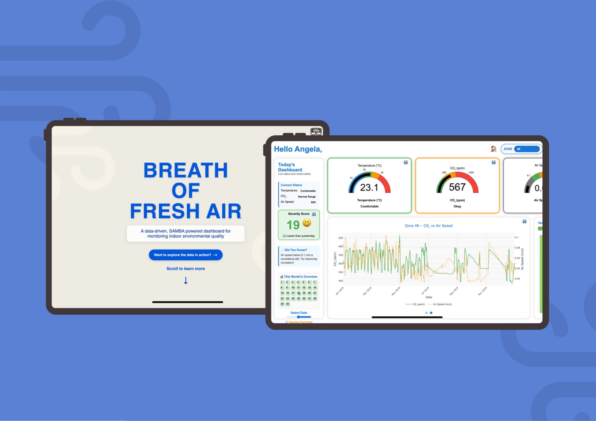

Data Visualisation · UX Design · 2025
Data that helps you breathe easier at work.
An interactive IEQ dashboard that turns raw building sensor data into instant, actionable insight — giving office managers a clear picture of their workspace health before problems become complaints.

The Brief
The brief was deliberately open-ended: given a year's worth of real IEQ sensor data from the University of Sydney's SAMBA system, what data visualisation product could it enable?
SAMBA captures 10 comfort metrics — temperature, CO₂, airspeed, humidity, light, sound, and more — every five minutes, across three office zones, for an entire year. The data was rich. The opportunity was clear. But nobody was actually reading it in a useful way.
I noticed that at industry events I'd attended, environmental conditions in workspaces were barely considered. If we expect people to do their best work, the spaces they occupy need to support that. That observation shaped everything from the problem statement to the final interface.
The Problem
The SAMBA system was collecting data constantly. But without a clear way to interpret it, office managers had no choice but to wait — until a staff member complained, until conditions were already uncomfortable, until the problem was too big to ignore.
Poor ventilation doesn't just cause discomfort. It leads to increased sick leave, lower productivity, and expensive emergency maintenance. The gap wasn't the data — it was the interface.
"Although the IEQ Lab's SAMBA system continuously captures airflow, CO₂, and other comfort metrics every five minutes across all office zones — without clear, easy-to-digest visualisations, office managers can't detect under-ventilated areas until staff complain. By which time the problem has persisted, causing discomfort, health risks, and expensive emergency interventions."
The Solution
An interactive, single-screen dashboard that turns a year's worth of raw sensor readings into something any office manager can understand in seconds — no data background required.
Inspired by the immediate legibility of fire danger rating signs and the familiarity of traffic-light colour systems, the interface uses large colour-coded gauges, a severity score, a zone map, and a monthly calendar view to give a complete picture of workspace health — all without a single menu to dig through.
"Healthier Space + Action = Better Results. That was the equation driving every design decision."
Key Features
How I Got There
Every design decision was evidence-based — from the choice to use large fonts (backed by Rello et al., 2016) to the traffic-light colour system inspired by fire danger rating signs.
Usability Testing Participants
Sketches to Final Dashboard
Key Insights from Testing
The Results
My Role
This was a solo project end-to-end. I owned everything from the initial data analysis through to the final coded, interactive dashboard.
Data analysis and pattern identification — processed a full year of SAMBA sensor readings across Zones 48, 49, and 50, identifying key relationships between CO₂, airspeed, temperature, and PMV that shaped the dashboard's focus variables
UX research and problem framing — defined the target audience (non-technical office managers), shaped the problem statement, and grounded every design decision in research on readability, accessibility, and environmental data communication
Interactive dashboard development — built the full working dashboard in HTML, CSS, and JavaScript using Plotly.js for gauge and graph rendering, including the severity score normalisation logic and date-based data filtering
Designed and ran two rounds of usability testing — recruited and facilitated testing with 13 participants across two phases, synthesised findings, and iterated the design in direct response to what users struggled with
Information design and visual hierarchy — applied research-backed choices (large fonts, traffic-light colours, single-screen layout) to make complex sensor data immediately interpretable for non-expert users
Tools & Technologies
No drag-and-drop dashboard builder — every interaction, chart, and data transformation was written by hand. That was the point.